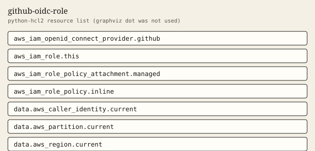

github-oidc-role
GitHub Actions role whose trust policy allows one branch or one environment.
Tests passed 6 of 6. Failed 0.
Inputs
| Name | Type | Required | Description |
|---|---|---|---|
| create_oidc_provider | bool | no | Create the GitHub OIDC provider. Set false and pass existing_oidc_provider_arn when the account already has one. |
| existing_oidc_provider_arn | string | no | ARN of an existing GitHub OIDC provider. Required when create_oidc_provider is false. |
| github_org | string | yes | GitHub organization or user that may assume the role. Wildcards are rejected. |
| github_repo | string | yes | Single GitHub repository name that may assume the role. Wildcards are rejected. |
| inline_policy_json | string | no | Optional inline policy JSON. Null skips the inline policy. A bare star action is rejected. |
| managed_policy_arns | list(string) | no | Managed policy ARNs to attach to the role. |
| max_session_duration | number | no | Maximum role session duration in seconds. |
| name | string | yes | IAM role name. Do not encode an environment into this name. |
| oidc_thumbprints | list(string) | no | SHA-1 thumbprints for the GitHub OIDC provider. The provider resource requires at least one. |
| subject_ref | string | yes | Branch name when subject_type is branch, or environment name when subject_type is environment. Wildcards are rejected. |
| subject_type | string | yes | Whether the trust subject pins a branch or a GitHub environment. |
| tags | map(string) | no | Extra tags merged onto every taggable resource. ManagedBy and Module are always set by the module. |
Outputs
| Name | Description |
|---|---|
| caller_context | Account, partition, and region resolved from data sources. |
| inline_policy_count | Number of inline policies. Zero when inline_policy_json is null. |
| managed_policy_count | Number of managed policy attachments. |
| max_session_duration | Role max session duration in seconds. |
| oidc_provider_created | True when this module creates the GitHub OIDC provider. |
| role_arn | ARN of the IAM role. |
| role_name | Name of the IAM role. |
| tag_audit | Tags on every taggable resource this module creates. |
| trust_audience | Exact token.actions.githubusercontent.com:aud value written into the trust policy. |
| trust_subject | Exact token.actions.githubusercontent.com:sub value written into the trust policy. |
Example
The caller supplies the region. This example does not embed an account id.
module "gha" {
source = "../.."
name = "gha-demo-role"
github_org = "example-org"
github_repo = "example-repo"
subject_type = "branch"
subject_ref = "main"
tags = {
Example = "basic"
}
}
Tests
- branch_subject passed
- environment_subject passed
- existing_provider_and_policies passed
- short_session_rejected passed
- reject_wildcard_repo passed
- reject_wildcard_org passed
Mock plan excerpt
mocked provider: ARNs and IDs are simulated. This excerpt is from terraform test with a mocked provider, not a live plan.
mocked provider: ARNs and IDs are simulated. This is terraform test -verbose, not a live plan.
tests\github-oidc-role.tftest.hcl... in progress
run "branch_subject"... pass
Terraform used the selected providers to generate the following execution
plan. Resource actions are indicated with the following symbols:
+ create
Terraform will perform the following actions:
# aws_iam_openid_connect_provider.github[0] will be created
+ resource "aws_iam_openid_connect_provider" "github" {
+ arn = (known after apply)
+ client_id_list = [
+ "sts.amazonaws.com",
]
+ id = (known after apply)
+ tags = {
+ "ManagedBy" = "terraform"
+ "Module" = "github-oidc-role"
+ "Owner" = "platform"
}
+ tags_all = (known after apply)
+ thumbprint_list = [
+ "6938fd4d98bab03faadb97b34396831e3780aea1",
]
+ url = "https://token.actions.githubusercontent.com"
}
# aws_iam_role.this will be created
+ resource "aws_iam_role" "this" {
+ arn = (known after apply)
+ assume_role_policy = (known after apply)
+ create_date = (known after apply)
+ description = "GitHub Actions role for repo:example-org/example-repo:ref:refs/heads/main in partition aws."
+ id = (known after apply)
+ managed_policy_arns = (known after apply)
+ max_session_duration = 3600
+ name = "gha-demo-role"
Resources
graphviz dot was not installed. The figure is a python-hcl2 resource list.

Changelog
Changelog
All notable changes to this module are documented in this file.
The format is based on Keep a Changelog, and this module uses Semantic Versioning.
[1.0.0] - 2026-10-03
Added
- Optional GitHub OIDC provider and a role trust policy pinned to one branch or one environment.
Billable item names
Names only. This page does not quote a price. Example amounts, including a budget limit, are placeholders and are not recommendations. GuardDuty and Security Hub stay off unless a module switch is set, because those services are billable.
- No separate billable service